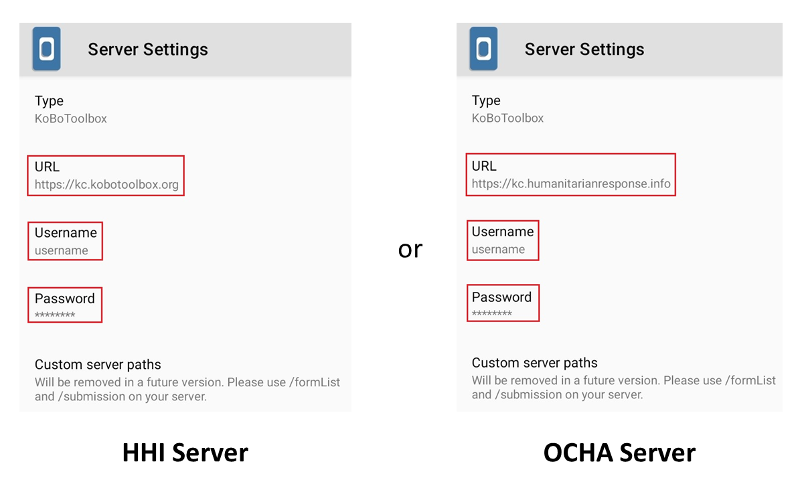
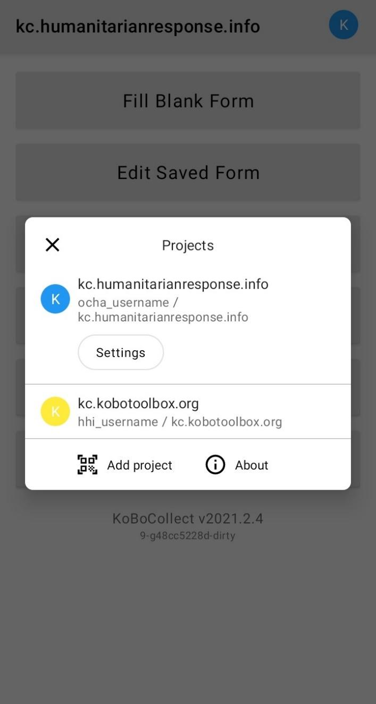
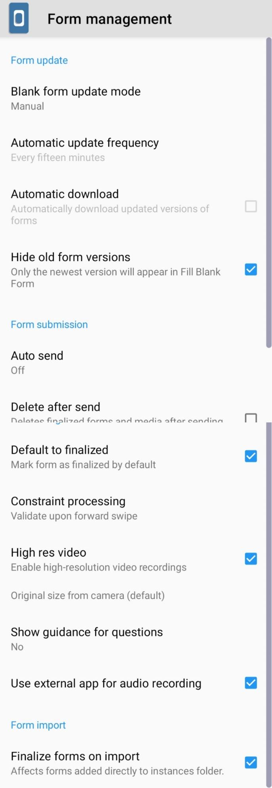
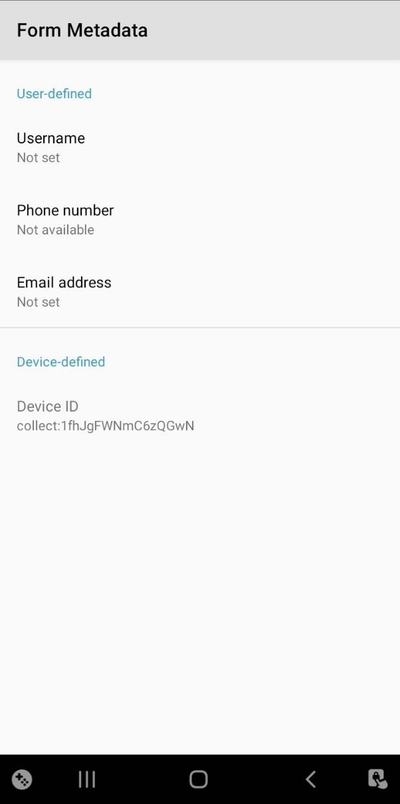

Search the knowledge base, browse our resources, and visit our forum for more detailed information
Last updated: 7 Jul 2025
The latest version of the KoboCollect App refers to v2021.2.4 and above.
KoboCollect is an open-source Android app for collecting survey data. It’s one of two ways that you can collect data through KoboToolbox (the other way is through web forms - Enketo). It’s free and the latest version of the app can be accessed in the Google Play Store.
The first step after installing KoboCollect on your device is to set up the server URL, Username, and Password, which connects your KoboCollect app to the KoboToolbox server. This allows you to download deployed forms from KoboToolbox to your mobile device and also send data collected through the app back to the server.
The server in KoboCollect can be configured in two different ways: manually or through a QR code.
Open KoboCollect.
Select Manually enter project details.

You will now be asked to input the URL, Username, and Password,
and then select Add. For the URL, you must select from the
two KoboToolbox servers. If you created your user account on
the Global Server, the URL is https://kc.kobotoolbox.org. If your
user account is on the European Union Server, the URL is
https://kc-eu.kobotoolbox.org.

Despite setting up the server settings correctly, users may have trouble connecting KoboCollect to the server. This could be an issue with the device’s incorrect date and time settings. To learn more about troubleshooting KoboCollect, please read our support article Troubleshooting KoboCollect Android Application.
After setting up the server, you should now see the following home screen.

You can use KoboCollect to get blank forms to your device, collect data (fill blank forms), store it in your device, edit the filled in forms (edit saved forms), submit saved forms, and delete filled in forms/blank forms.
This feature is only available with the latest version of the app and is relevant if you have multiple KoboToolbox user accounts.
Some users have multiple KoboToolbox accounts, either on the same server or a different server. With the latest version, users can manage all their accounts in the same app and use them in parallel by switching from one account to another as needed. Follow the steps outlined below to setup multiple server connections:
After setting up your account in the app (see instructions above), open KoboCollect.
Select the icon (circled in K) that is located at the top right of your screen.
You should see a dialogue box like the one shown below.

Select Add project.
Fill in the URL, Username, and Password and then select Add.
You should now see the home screen. Once again, select the icon (circled in K) at the top right of your screen to ensure your connection was successful.
After setting up an additional server, you should see a dialogue box like the one shown below.

Here, you will see two different accounts setup in the app. You can add more accounts as needed. The account listed first is the active one and you can only see forms for the active account. You can easily switch to your other accounts, making them active, by simply selecting them.
Oftentimes, users in large projects will need to set up a large number of devices under the same server settings (URL, Username, and Password, etc.). Setting up all the devices manually would be time-consuming and prone to error. To save time, you can set up one device manually and then copy the settings through a QR code generated from the first device.
To set up a device with a QR Code, you will require at least one app that has been set up manually.
Open KoboCollect and choose the project that has been set up.
Select the circle K icon that is located at the top right of your screen.
Select Settings.
Then select Project Management.

Select Reconfigure with QR code.
Choose QR Code at the top. A QR code will be displayed that contains all of your KoboCollect settings, including the server URL, Username, and Password.

Open KoboCollect on another device that you want to set up.
Select Configure with QR code.
Scan the QR code. If successful, you should hear a beep and the app will be automatically configured. Repeat for all other devices you want set up.
You can also copy the QR code and share it by email, Whatsapp, etc., to set up other devices but be aware that the QR code contains the password to your account, allowing others to sign into your account. It is not recommended to share the QR code through electronic means if the same account has permissions to view, edit, or delete data.
Once you have configured the URL, Username, and Password in the app correctly, you can send blank forms to your device from the KoboToolbox server.
Open KoboCollect.
Make sure that you have at least one project set up in your KoboToolbox user account and that your device is connected to the internet.
Select Get Blank Form from the home menu.

A list of all your deployed survey forms should appear. Press Select All to have all the survey forms sent to the app or select the ones you wish to have by selecting them manually. Then click Get Selected.

Users will need an internet connection while sending blank forms to KoboCollect.
Once you have blank form(s) in the app, you will no longer require an internet connection to collect data. The blank forms and the filled in forms will stay on the device until you delete them from the app or submit them to the server.
Open KoboCollect.
Select Fill Blank Form from the home menu.
Select the survey form that you want to use to start collecting data.
Go through all the questions by swiping your finger from right to left or by selecting the NEXT key after answering the questions.
At the end of the survey, select Save Form and Exit.

Make sure the form is marked as "finalized".
If this is unchecked but you still select Save Form and Exit,
the filled in form goes to Edit Saved Form instead of going to
Send Finalized Form. If this happens, go back to Edit
Saved Form, open the form, and without needing to make any edits, you
can select Go To End. Make sure the form is marked as
"finalized" and then select Save Form and
Exit.
If an interviewer believes that a form has not been
completed, for example, if the head of the household wasn’t there or children
weren’t there but are needed for the data collection, they can rename the form
in order to come back to it more easily. You can change the name of a saved
form to something easy to keep track of, such as "Incomplete" or "Incomplete:
(name of respondent)" under Name this form.
Once you have pressed Save Form and Exit, the saved form is automatically stored under Edit Saved Form.
Open KoboCollect.
Select Edit Saved Form from the home menu.
You will see a list of Saved Forms. Choose the one that needs edits or updates.
Make changes as needed, and then select Save Form and Exit.
Repeat the process multiple times if multiple forms need edits or updates.
Users do not need an internet connection while editing a saved form in KoboCollect.
Once you have collected your data, and made any necessary edits, you can upload the forms to the KoboToolbox server.
Open KoboCollect.
Make sure the device is securely connected to the internet.
Select Send Finalized Form from the home screen.
A list of all the collected forms should appear.
Press Select All (or select the ones you wish to upload) and then press Send Selected.
To ensure the forms were uploaded successfully, select View Sent Form. You should now be able to view all the submitted forms.
Users will need an internet connection while submitting data from KoboCollect to the server.
Once you have completed data collection for your survey project and all the filled in forms have been uploaded to the server, it is recommended to delete the forms from the KoboCollect app. Keeping them in the app can confuse interviewers while collecting data for a different project. Follow the steps outlined below to delete Saved Forms and Blank Forms from your app.
Open KoboCollect.
Select Delete Saved Form from the home screen.
Users should now see two tabs. The default is Saved Forms. These are the forms that were filled in while collecting data. Press Select All to delete all the Saved Forms from the app and then Delete Selected.

The next tab is the Blank Forms. Press Select All to delete all the Blank Forms from the app and then Delete Selected.
Users should not require an internet connection to delete saved forms in KoboCollect.
When you submit all the filled forms to the server by pressing Send Finalized Form, the successfully submitted forms can be seen in the View Sent Form section. Data managers generally advise to keep this information until the end of the project as it always provides a reference for the total number of collections and submissions.
Once the current project’s data collection is over or if you are planning to start a new project, it is advised to reset the counter in View Sent Form. This will help to keep track of the data collection for the new project.
Open KoboCollect.
Select the icon (circled in K) that is located at the top right of your screen.
Select Settings.

Under Project settings, select Project management.
Under Project management select Reset.
Click Saved forms (instances folder, instances database) and then select RESET.

You should see a small dialogue box with a pop up a message “Reset results Saved forms: Success”.
Select OK.
Users do not need an internet connection to reset View Sent Form in KoboCollect.
In some cases, it is recommended to hide certain buttons in the app from interviewers to prevent them from editing or changing collected data, decreasing the risk of data loss.
Open KoboCollect.
Select the icon (circled in K) that is located at the top right of your screen.
Select Settings.
Under the Project settings, select Access control, which includes Main Menu Settings, User Settings, and Form Entry Settings.
Select Main Menu Settings to hide buttons from the main menu.

Do the same for User Settings and Form Entry Settings to hide buttons from those menus as well.
Users do not need an internet connection to hide buttons in KoboCollect.
If needed, you can set up an admin password in the KoboCollect app, limiting access to the app’s admin settings to only team members with the admin password.
Open KoboCollect.
Select the icon (circled in K) that is located at the top right of your screen.
Select Settings.
Under the Project settings, select Set admin password.
You will be requested to Enter New Password. After entering a new password, select OK.
Users do not need an internet connection to lock KoboCollect with an admin password. To remove the admin password, leave it blank instead of providing a new password.
There are other form management settings available within KoboCollect which could assist in managing your data collection project:
Form update provides an option to update the survey form manually or automatically. If set to automatic, the forms that are redeployed on the KoboToolbox server are automatically updated in the app. Note that keeping this feature active will likely drain your device’s battery more quickly.
Form submission provides an option to send submissions to the server manually or automatically, with the options of Wifi only, cellular only, and wifi or cellular. This setting also gives the option to delete finalized forms and media after being successfully sent to the server.
Form filling provides several options for forms and data collection:
Option to mark the form as finalized by default.
Option to configure the constraint processing (validate upon forward swipe or defer validation until finalized).
Enable or disable high-resolution video recordings or change the allowed image size when taking videos and images through the app.
Show guidance for questions under the form filling to show or hide guidance for questions
Use of an external app for audio recording could help to set up an external app for audio recording while collecting data.
Follow the steps outlined below to access the form management settings:
Open KoboCollect.
Select the icon (circled in K) that is located at the top right of your screen.
Select Settings.
Under the Project settings, select Form management and select the options relevant for your project.

Users do not need an internet connection to access or change the form management settings in KoboCollect.
Users can set up the collection of metadata like username, phone number and email address in KoboCollect, providing additional details on who submitted the records to the server. These details can be helpful to validate the quality of the data collected by the team.
In order to collect metadata, it must be configured in both the KoboCollect app and on the KoboToolbox platform for the same project. Please refer to our support article Form Settings and Meta Questions for instructions on how to configure set up in KoboToolbox.
Open KoboCollect.
Select the icon (circled in K) that is located at the top right of your screen.
Select Settings.
Under the Project settings, select User and device identity.
Under User and device identity, select Form metadata.

Enter all the metadata like username, phone number, and email address that you want to collect.
Users do not need an internet connection to access the metadata setting in KoboCollect.
KoboCollect is a fork of ODK Collect. As of today, there are no substantive differences between the two apps. Users are free to use either one for data collection. KoboToolbox is fully compatible with both apps.
Please note that it is not recommended to have both apps installed simultaneously as this could lead to some confusion depending on the Android settings.
Historically, there were several significant differences between the two. Back in 2009, KoboToolbox made several changes to ODK Collect, creating KoboCollect, such as cascading questions, hiding delete, and edit buttons for field data collection. The XLSForm was not yet an option in ODK Collect and KoboToolbox had built a formbuilder for all question types and advanced settings, including cascading questions, which were saved directly as an XML file for the mobile app. These changes were eventually incorporated into ODK Collect, along with many other great features. In 2014, KoboToolbox decided to fork ODK Collect to create the new KoboCollect, with minimal changes, including the KoboToolbox server in the configuration dropdown, a reference back to ODK Collect, and the KoboToolbox logo and name.
Did you find what you were looking for? Was the information clear? Was anything missing?
Share your feedback to help us improve this article!